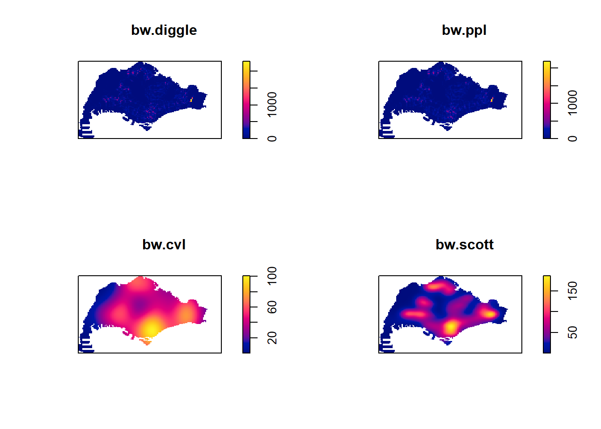
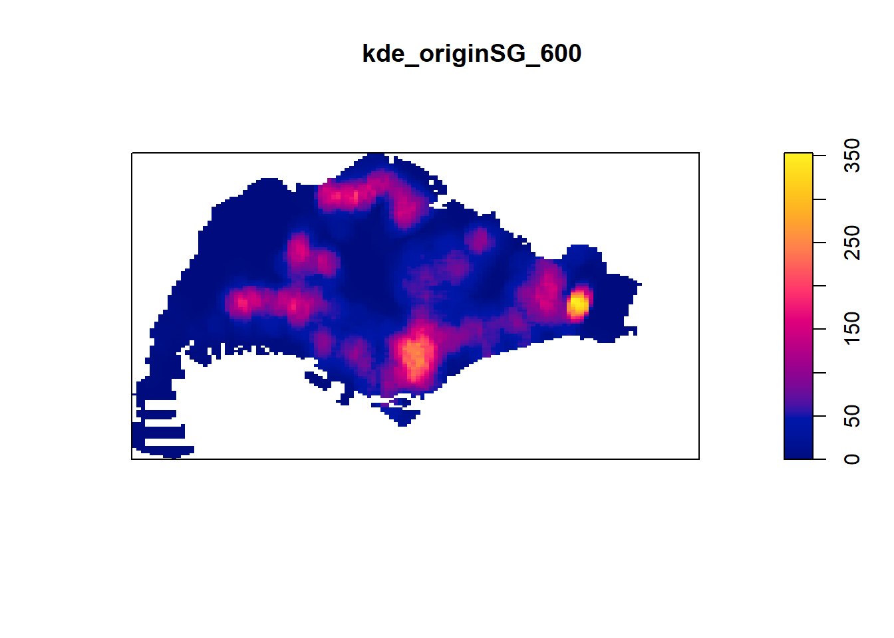

pacman::p_load(sf, tidyverse, tmap, spatstat, maptools, raster, arrow, lubridate, readr)Take Home Exercise 1: Application of Spatial Point Patterns Analysis
Project overview
In this study, we apply appropriate spatial point patterns analysis methods to discover the geographical and spatio-temporal distribution of Grab hailing services locations in Singapore and describe the spatial patterns revealed by kernel density maps.
Installing R packages
For this exercise, I will be using the following packages:
sf
tidyverse
tmap
spatstat
maptools
raster
arrow
lubridate
readr (for saving transformed data sets as rds)
Data Import and initial data transformation
For this section, after all data sets have been transformed, they will be saved in the rds format for easier use in the rest of the exercise.
Aspatial data
Grab Posisi data
First, the data needs to be imported into RStudio. In this exercise, we will need to import all of the data in order to observe the temporal distribution.
df <- read_parquet(file="data/aspatial/GrabPosisi/part-00000.parquet")
df1 <- read_parquet(file="data/aspatial/GrabPosisi/part-00001.parquet")
df2 <- read_parquet(file="data/aspatial/GrabPosisi/part-00002.parquet")
df3 <- read_parquet(file="data/aspatial/GrabPosisi/part-00003.parquet")
df4 <- read_parquet(file="data/aspatial/GrabPosisi/part-00004.parquet")
df5 <- read_parquet(file="data/aspatial/GrabPosisi/part-00005.parquet")
df6 <- read_parquet(file="data/aspatial/GrabPosisi/part-00006.parquet")
df7 <- read_parquet(file="data/aspatial/GrabPosisi/part-00007.parquet")
df8 <- read_parquet(file="data/aspatial/GrabPosisi/part-00008.parquet")
df9 <- read_parquet(file="data/aspatial/GrabPosisi/part-00009.parquet")Combining the data
All of the data covers 2 weeks of Grab rides, but they are jumbled up. In order to accurately extract the origin and destination points, we need to combine everything into a singular data frame.
all_grab <- df %>%
full_join(df1) %>%
full_join(df2) %>%
full_join(df3) %>%
full_join(df4) %>%
full_join(df5) %>%
full_join(df6) %>%
full_join(df7) %>%
full_join(df8) %>%
full_join(df9)Data handling: Converting the data type of pingtimestamp to date-time
Grab marks the date-time of each data point as a pingtimestamp. As a result, we will need to transform the data type to date-time using lubridate.
all_grab$pingtimestamp <- as_datetime(all_grab$pingtimestamp)Data handling: Extracting trip origins
Now, we extract the trip origin locations and derive 3 new columns for weekday, starting hour and day of month into a new data frame. The origin locations are derived by grouping trips according to their trj_id, arranging by the date-time and filtering for the first item in each group.
origin_df <- all_grab %>%
group_by(trj_id) %>%
arrange(pingtimestamp) %>%
filter(row_number()==1) %>%
mutate(weekday = wday(pingtimestamp,
label = TRUE,
abbr = TRUE),
start_hr = factor(hour(pingtimestamp)),
day = factor(mday(pingtimestamp)))Data handling: Extracting destinations
To extract trip destinations, we use a similar code as above except we filter to take the nth item out of n items in a group.
dest_df <- all_grab %>%
group_by(trj_id) %>%
arrange(pingtimestamp) %>%
filter(row_number()==n()) %>%
mutate(weekday = wday(pingtimestamp,
label = TRUE,
abbr = TRUE),
start_hr = factor(hour(pingtimestamp)),
day = factor(mday(pingtimestamp)))Writing data as rds
With the data transformation done, we can now write it out as an rds for future use.
write_rds(origin_df, "data/rds/grab_origins.rds")
write_rds(dest_df, "data/rds/grab_dest.rds")Geospatial data
Singapore Coastal outline (excluding islands)
This layer is derived from the Master Plan 2019 Subzone Boundary (No Sea) from data.gov. First, it needs to be imported into rstudio using st_read()
mpsz_sf <- st_read(dsn = "data/geospatial",
layer = "MPSZ-2019")From the summary, it can be seen that the layer is projected to WGS84. To continue, there is the need to reproject the polygons to the correct CRS SVY21.
mpsz3414_sf <- st_transform(mpsz_sf, 3414)Now, we can plot the map and view the data.
plot(mpsz3414_sf["SUBZONE_N"])There are some islands in the map that lack bridges for Grab drivers to reach, such as Coney Island. However, there are other relevant islands such as Sentosa that need to be kept.
From research, Grab drivers can be observed to be able to enter Sentosa and Jurong Island to pick up and drop off passengers at the current moment. However, the Jurong Island polygon in mpsz3414_sf is combined with another island Bukom. Furthermore, Grab drivers are only allowed onto the island if they have a security pass, resulting in few drivers entering and exiting the island. Therefore, I am choosing to remove Jurong Island and Bukom from the map.
Hence, the islands that need to be excluded from the map are:
Coney Island
Southern Group
North-Eastern islands (including Pulau Ubin: Grab drivers can only pick up and drop off passengers at the ferry terminal)
Sudong
Semakau
Jurong Island and Bukom
To remove these, I’ve chosen to filter them out by name. This is because Sentosa and Jurong Island are also labelled as “islands” and would otherwise be caught.
main_island <- mpsz3414_sf %>%
filter(SUBZONE_N !="CONEY ISLAND") %>%
filter(SUBZONE_N != "NORTH-EASTERN ISLANDS") %>%
filter(SUBZONE_N != "SOUTHERN GROUP") %>%
filter(SUBZONE_N != "SUDONG") %>%
filter(SUBZONE_N != "SEMAKAU") %>%
filter(SUBZONE_N != "SUDONG") %>%
filter(SUBZONE_N != "JURONG ISLAND AND BUKOM")
plot(main_island["SUBZONE_N"])Now, we can use st_union to get the outline of Singapore.
plot(st_union(main_island))Writing data as rds
With this, we can now save the data in the rds format.
write_rds(main_island, "data/rds/islandOutline.rds")Singapore road network
In order to conduct Network Kernel Density Estimation (NKDE), we will need a road network to map points onto. For Singapore’s road network, we can get data from OpenStreetMap via Geofabrik. From the documentation that comes with the download, we know that the road network is found in the gis_osm_roads_free_1 shape file.
roads_all <- st_read(dsn = "data/geospatial/openstreetmap",
layer = "gis_osm_roads_free_1")This data is also not projected to SVY21, which is something we will have to fix.
roads_all <- st_transform(roads_all, 3414)One issue currently is that the data includes all roads from Singapore, Malaysia and Brunei. We only want the road network for Singapore. In order to extract this, we can use st_intersection to filter for roads within Singapore based on the CoastalOutline layer (as imported from rds)
sg_roads <- st_intersection(roads_all, CoastalOutline)Due to the size of the data, we will later be narrowing the scope of our investigation for NKDE to certain subzones. For now, I will save the current road network into an rds.
write_rds(sg_roads, "data/rds/sgroads.rds")Final import of data
origin_all_df <- read_rds("data/rds/grab_origins.rds")
dest_all_df <- read_rds("data/rds/grab_dest.rds")
CoastalOutline <- read_rds("data/rds/islandOutline.rds")
sg_roads <- read_rds("data/rds/sgroads.rds")Data wrangling: origins
Analysis of origins
First, lets look at the distribution of origins over time using ggplot.
ggplot(data = origin_all_df,
aes(x=weekday)) +
geom_bar()
As seen above, the data is evenly distributed across all days of the week.
ppp object transformation
In order to conduct Kernel Density Estimation (KDE), we need to transform our layers into a ppp object. Before we begin that process, we will need to transform origin_all_df into an sf object using st_as_sf().
Important
For the “crs” argument of st_as_sf(), we need to provide it with a geodetic CRS and not a projected CRS. To transform the CRS, we can pipe the output into an st_transform() argument.
origins_sf <- st_as_sf(origin_all_df,
coords = c("rawlng", "rawlat"),
crs=4326) %>%
st_transform(crs = 3414)Now, we can transform all relevant data frames into a ppp object (via transforming to Spatial/*, SpatialPoints and then ppp objects), which we can inspect using the summary function.
origin_spatial <- as_Spatial(origins_sf)
origin_sp <- as(origin_spatial, "SpatialPoints")
origin_ppp <- as(origin_sp, "ppp")
summary(origin_ppp)Planar point pattern: 28000 points
Average intensity 2.473666e-05 points per square unit
Coordinates are given to 3 decimal places
i.e. rounded to the nearest multiple of 0.001 units
Window: rectangle = [3628.24, 49845.23] x [25198.14, 49689.64] units
(46220 x 24490 units)
Window area = 1131920000 square unitsDuplicate data handling
Now, we need to check for duplicated data.
any(duplicated(origin_ppp))[1] FALSEIf we want to know how many locations have more than one point event, we can use the following:
sum(multiplicity(origin_ppp) > 1)[1] 0As we can see, there is no duplicate data in the ppp object.
Creating owin object
Next, we need to confine the analysis with a geographical area like Singapore boundary. If a study area is not defined and confined, the data points will assume it can occur within blank spaces (because technically it will spread out at random).
CoastalOutline <- st_union(CoastalOutline)
sg_owin <- as.owin(CoastalOutline)
plot(sg_owin)summary(sg_owin)Window: polygonal boundary
50 separate polygons (35 holes)
vertices area relative.area
polygon 1 13910 6.66691e+08 9.98e-01
polygon 2 285 1.61128e+06 2.41e-03
polygon 3 27 1.50315e+04 2.25e-05
polygon 4 (hole) 41 -4.01660e+04 -6.01e-05
polygon 5 (hole) 317 -5.11280e+04 -7.65e-05
polygon 6 (hole) 3 -4.14099e-04 -6.20e-13
polygon 7 30 2.80002e+04 4.19e-05
polygon 8 (hole) 4 -2.86396e-01 -4.29e-10
polygon 9 (hole) 3 -1.81439e-04 -2.71e-13
polygon 10 (hole) 3 -8.68789e-04 -1.30e-12
polygon 11 (hole) 3 -5.99535e-04 -8.97e-13
polygon 12 (hole) 3 -3.04561e-04 -4.56e-13
polygon 13 (hole) 3 -4.46076e-04 -6.67e-13
polygon 14 (hole) 3 -3.39794e-04 -5.08e-13
polygon 15 (hole) 3 -4.52043e-05 -6.76e-14
polygon 16 (hole) 3 -3.90173e-05 -5.84e-14
polygon 17 (hole) 3 -9.59850e-05 -1.44e-13
polygon 18 (hole) 4 -2.54488e-04 -3.81e-13
polygon 19 (hole) 4 -4.28453e-01 -6.41e-10
polygon 20 (hole) 4 -2.18616e-04 -3.27e-13
polygon 21 (hole) 5 -2.44411e-04 -3.66e-13
polygon 22 (hole) 5 -3.64686e-02 -5.46e-11
polygon 23 71 8.18750e+03 1.23e-05
polygon 24 (hole) 6 -8.37554e-01 -1.25e-09
polygon 25 (hole) 38 -7.79904e+03 -1.17e-05
polygon 26 (hole) 3 -3.41897e-05 -5.12e-14
polygon 27 (hole) 3 -3.65499e-03 -5.47e-12
polygon 28 (hole) 3 -4.95057e-02 -7.41e-11
polygon 29 91 1.49663e+04 2.24e-05
polygon 30 (hole) 5 -2.92235e-04 -4.37e-13
polygon 31 (hole) 3 -7.43616e-06 -1.11e-14
polygon 32 (hole) 270 -1.21455e+03 -1.82e-06
polygon 33 (hole) 19 -4.39650e+00 -6.58e-09
polygon 34 (hole) 35 -1.38385e+02 -2.07e-07
polygon 35 (hole) 23 -1.99656e+01 -2.99e-08
polygon 36 40 1.38607e+04 2.07e-05
polygon 37 (hole) 41 -6.00381e+03 -8.98e-06
polygon 38 (hole) 7 -1.40546e-01 -2.10e-10
polygon 39 (hole) 11 -8.36705e+01 -1.25e-07
polygon 40 (hole) 3 -2.33435e-03 -3.49e-12
polygon 41 45 2.51218e+03 3.76e-06
polygon 42 139 3.22293e+03 4.82e-06
polygon 43 148 3.10395e+03 4.64e-06
polygon 44 (hole) 4 -1.72650e-04 -2.58e-13
polygon 45 75 1.73526e+04 2.60e-05
polygon 46 83 5.28920e+03 7.91e-06
polygon 47 106 3.04104e+03 4.55e-06
polygon 48 71 5.63061e+03 8.43e-06
polygon 49 10 1.99717e+02 2.99e-07
polygon 50 (hole) 3 -1.37223e-02 -2.05e-11
enclosing rectangle: [2667.54, 55941.94] x [21448.47, 50256.33] units
(53270 x 28810 units)
Window area = 668316000 square units
Fraction of frame area: 0.435With that, we can finally plot the point data onto the map.
originSG = origin_ppp[sg_owin]
plot(originSG)Kernel Density Estimation: origins
Rescaling values
Before we can conduct KDE analysis, we first need to rescale the unit of measurement in originSG from metres (the unit of measurement in SVY21) to kilometres (to avoid small numbers).
originSG_km <- rescale(originSG, 1000, "km")Working with different automatic bandwidth selection methods
There are 4 different automatic bandwidth selection method that we can choose: bw.diggle, bw.CvL, bw.scott and bw.ppl. For this exercise, we are using bw.diggle, or the radius selection method. We can plot all four to see which may give us better results.
kde_origins_dig <- density(originSG_km,
sigma=bw.diggle,
edge=TRUE,
kernel="gaussian")
kde_origins_ppl <- density(originSG_km,
sigma=bw.ppl,
edge=TRUE,
kernel="gaussian")
kde_origins_cvl <- density(originSG_km,
sigma=bw.CvL,
edge=TRUE,
kernel="gaussian")
kde_origins_scott <- density(originSG_km,
sigma=bw.scott,
edge=TRUE,
kernel="gaussian")
par(mfrow=c(2,2))
plot(kde_origins_dig, main = "bw.diggle")
plot(kde_origins_ppl, main = "bw.ppl")
plot(kde_origins_cvl, main = "bw.cvl")
plot(kde_origins_scott, main = "bw.scott")
We can retrieve the bandwidth used to compute the KDE layer as well.
bw.diggle(originSG) sigma
8.091242 bw.ppl(originSG) sigma
123.8747 bw.CvL(originSG) sigma
3147.573 bw.scott(originSG) sigma.x sigma.y
1592.5974 938.9125 As seen, bw.ppl and bw.diggle appears to give relatively similar map results which highlight a single tight cluster in the east and include up to a thousand origin points. Meanwhile, bw.cvl and bw.scott appear to use tighter radii, with bw.scott being able to better show hotspots compared to how spread out bw.cvl looks. Hence, for the rest of this exercise, we will be using bw.scott.
Working with different kernel methods
By default, the kernel method used in density.ppp() is gaussian. But there are three other options, namely: Epanechnikov, Quartic and Dics. We can test each of these to see which kernel method provides a tighter grouping.
par(mfrow=c(2,2))
plot(density(originSG_km,
sigma=bw.scott,
edge=TRUE,
kernel="gaussian"),
main="Gaussian")
plot(density(originSG_km,
sigma=bw.scott,
edge=TRUE,
kernel="epanechnikov"),
main="Epanechnikov")
plot(density(originSG_km,
sigma=bw.scott,
edge=TRUE,
kernel="quartic"),
main="Quartic")
plot(density(originSG_km,
sigma=bw.scott,
edge=TRUE,
kernel="disc"),
main="Disc")
For this exercise, disc and quartic appear to provide us with tighter values. Hence, we will be using Disc.
Fixed and Adaptive KDE bandwidths
For a fixed bandwidth, we will be fixing the radius at 600m.
kde_originSG_600 <- density(originSG_km, sigma=0.6, edge=TRUE, kernel="disc")
plot(kde_originSG_600)Typically, a fixed bandwidth method is very sensitive to highly skewed distribution of spatial point patterns over geographical units. To get around this, we can use an adaptive bandwidth instead.
kde_originSG_adaptive <- adaptive.density(originSG_km, method="kernel")
plot(kde_originSG_adaptive)We can compare the fixed and adaptive kernel density estimation outputs by using the code chunk below.
par(mfrow=c(1,2))
plot(kde_originSG_600, main = "Fixed bandwidth")
plot(kde_originSG_adaptive, main = "Adaptive bandwidth")
Conversion to raster via grid object
In order to fully visualise KDE in tmap, we would need to transform it into raster data. Before that, we need to convert it into a grid object
gridded_kde_origins_bw <- as.SpatialGridDataFrame.im(kde_originSG_600)
spplot(gridded_kde_origins_bw)Now, we can convert it to raster data.
kde_originsSG_bw_raster <- raster(gridded_kde_origins_bw)Note that there is no CRS to this data, so we will need to assign it on our own
projection(kde_originsSG_bw_raster) <- CRS("+init=EPSG:3414")
kde_originsSG_bw_rasterclass : RasterLayer
dimensions : 128, 128, 16384 (nrow, ncol, ncell)
resolution : 0.4162063, 0.2250614 (x, y)
extent : 2.667538, 55.94194, 21.44847, 50.25633 (xmin, xmax, ymin, ymax)
crs : +proj=tmerc +lat_0=1.36666666666667 +lon_0=103.833333333333 +k=1 +x_0=28001.642 +y_0=38744.572 +ellps=WGS84 +units=m +no_defs
source : memory
names : v
values : -1.173372e-13, 353.656 (min, max)